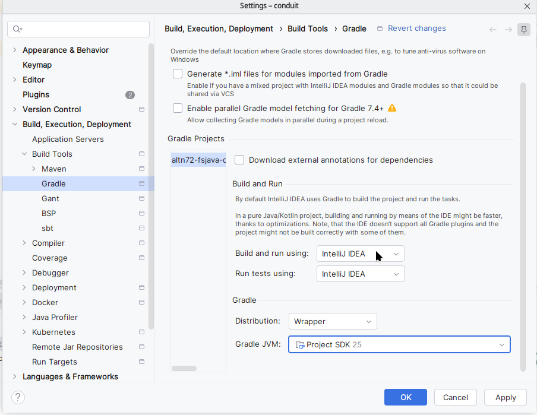

Projet Conduit
1 Introduction
Le site RealWorld propose différentes implémentations du même logiciel de blogging, Conduit, qui est similaire à Medium. Cela permet de comparer différentes stacks technologiques sur un projet réaliste.
Vous pouvez tester le frontend ici sans installation : Demo Conduit Vue3
Notre projet consiste à améliorer ce logiciel avec des corrections de bugs et des nouvelles fonctionnalités. Nous utiliserons :
- un frontend Vue.js, dérivé de Vue.js + Vite
- un backend Spring Boot, dérivé de Spring Boot backend
2 Objectifs pédagogiques
- Travailler sur une base de code existante.
- Il est rare en entreprise de démarrer un nouveau projet “from scratch”.
- Observer et intégrer les bonnes pratiques de développement en naviguant dans ce code
- Savoir identifier les problèmes de performances, de test coverage
- Développer de nouvelles fonctionnalités en respectant le style du code existant, les bonnes pratiques clean code et clean architecture.
- Mettre en pratique les compétences de développement frontend en Vue.js et backend en Java Spring boot.
3 Déroulement
Trois séances, en binômes
- séance 1 : Découverte, correction des premiers bugs
- séance 2 : Développement des fonctionnalités plus avancées. Séance plus courte pour faire la 2ème évaluation (20 %)
- séance 3 : DE de projet à la fin de la séance.
- Date limite pour le rendu final : 20/12 à 23:59
4 Critères d’évaluation
- 60% DE de projet : questions sur les fonctionnalités développées
- évalue la compréhension et la prise de recul
- vous devez comprendre le code que votre binôme a réalisé
- plus équitable qu’une soutenance : tout le monde a les mêmes questions, je peux comparer les réponses
- permet de passer plus de temps sur le projet
- 40% Rendu
- fonctionnalités couvertes
- réponses dans le README.md
- code coverage
- code quality
- qualité des commits
- commentaires
- commit du test qui échoue avant le commit du code de prod
- pas trop de code modifié en une seule fois
5 Démarrage
Cliquez sur ce Lien d’invitation Classroom50
Dans le binôme, un étudiant utilise le lien pour créer l’équipe et le repository. Une fois créé l’autre étudiant doit utiliser le même lien pour rejoindre l’équipe.
Modifiez vos paramètres Gradle dans IntelliJ :

Lisez le README.md du projet pour démarrer l’application.
6 Travail à réaliser
6.1 BUG : Les timestamps sont à Seoul
Dans votre navigateur, passez en mode développement, onglet network.
- Regardez la réponse de l’endpoint http://localhost:8080/api/articles
- Remarquez que les champs
createdAtetupdatedAtsont dans la timezone UTC+9 - Déterminez la cause
- Reproduisez le problème avec un test unitaire
- Corrigez le problème
- Écrivez dans le README.md votre réflexion
- pourquoi ce bug ne se voit pas dans l’interface ?
- où la timezone doit-elle être positionnée ?
6.2 BUG : supprimer ses commentaires
En étant “logged in”, ajoutez un commentaire sur un article dont vous n’êtes pas l’auteur. Ensuite, essayez de le supprimer. Dans l’onglet Network du navigateur, vous verrez une erreur 500.
- Corrigez la règle métier et justifiez votre choix
- Utilisez un autre type d’exception. Pourquoi
IllegalAccessErrorn’est-il pas un bon choix ? - Pour corriger, faites la même démarche que pour le bug des timestamps : test qui échoue, commit, correction.
6.3 BUG : Les commentaires ne s’affichent pas
Cliquez sur un article. Les commentaires en bas de page ne s’affichent pas.
- Regardez l’exception dans la console du backend
- Déterminez la cause. Si vous bloquez trop longtemps, demandez un indice à votre enseignant.
- Reproduisez le problème avec un test d’intégration
- Corrigez le problème. La solution tient en une ligne de code.
- Écrivez dans le README.md vos réflexions sur la cause de ce bug. Est-ce qu’on aurait pu l’éviter avec un autre design dans les services ?
6.4 BUG : Le feed affiche les mauvais articles
Cliquez sur “Your Feed”. Il affiche les articles mis en favori par l’utilisateur. C’est un bug fonctionnel. Il devrait afficher les articles des auteurs que l’utilisateur suit. (follow) Corrigez la fonctionnalité, en ajoutant un tri.
6.5 FEATURE : Modifier un commentaire
On peut créer ou supprimer ses commentaires, mais on ne peut pas les éditer. Modifiez le frontend et le backend pour le permettre.
- ⚠️ Attention aux droits : seul l’auteur d’un commentaire peut le modifier
- ajoutez les tests correspondants.
BONUS
L’utilisateur essaie de modifier le même commentaire en ayant deux navigateurs ouverts.
- Décrivez dans le README.md le problème que cela peut poser
- Corrigez le problème
6.6 FEATURE : Rôles
Ajoutez un rôle aux utilisateurs. Ils peuvent avoir l’un de ces rôles :
writer: rôle par défaut, même droits que maintenant.moderator: writer + peut modifier/supprimer les articles et commentaires de tout le monde.admin: moderator + peut changer les rôles des utilisateurs
Modifiez
data.sqlpour mettre des rôles aux utilisateursAffichez le rôle dans l’écran Settings
Ajoutez un écran de gestion des utilisateurs pour l’admin
- l’écran liste tous les utilisateurs
- on peut cliquer sur un utilisateur pour aller sur l’écran des settings
- dans Settings, l’admin peut modifier le rôle
- Décidez où stocker le rôle pour autoriser/interdire certaines opérations. Écrivez vos réflexions dans README.md.
- Modifiez l’UI et les controllers pour autoriser/interdire les opérations correspondant à chaque rôle
6.7 PERFORMANCE : favoritesCount
Connectez-vous en tant que
lambda_lucy, et affichez la page d’accueilDans la console du backend, effacez la sortie
Cliquez sur le cœur à droite d’un article pour le mettre en favori
comptez le nombre de requêtes contenant
... from article_favorites ... where article_id=?Répondez dans le README.md :
- que se passerait-il si un utilisateur avait 1000 articles en favori ? Pourquoi ?
- Supposons que l’article mis en favori soit très populaire. Il a été mis en favori par 100000 autres utilisateurs. Quel est l’impact et pourquoi ?
- Sur la page d’accueil, on affiche 10 articles par page. Que se passe-t-il si chacun de ces articles est populaire ?
Optimisation :
- Supprimez
Article#userFavoritedetUser#articleFavorited - Créez deux nouvelles classes
ArticleFavoriteIdetArticleFavorite:
package io.github.raeperd.realworld.domain.article;
import jakarta.persistence.Column;
import jakarta.persistence.Embeddable;
@Embeddable
public record ArticleFavoriteId(
@Column(name = "article_id") Long articleId,
@Column(name = "user_id") Long userId) {
}package io.github.raeperd.realworld.domain.article;
import jakarta.persistence.EmbeddedId;
import jakarta.persistence.Entity;
import jakarta.persistence.Table;
@Table(name = "article_favorites")
@Entity
public class ArticleFavorite {
@EmbeddedId
private ArticleFavoriteId id;
public ArticleFavorite(long articleId, long userId) {
this.id = new ArticleFavoriteId(articleId, userId);
}
protected ArticleFavorite() {
}
public ArticleFavoriteId getId() {
return id;
}
}- Créez deux nouvelles interfaces pour récupérer les données :
public interface FavoriteCount {
Long getArticleId();
Long getCount();
}
public interface ArticleFavoriteRepository extends Repository<ArticleFavorite, ArticleFavoriteId> {
/** favoritesCount for a whole page: one query instead of one per article */
@Query("TODO")
List<FavoriteCount> countByArticleIds(Collection<Long> articleIds);
/** "favorited" flag for the current viewer, for a whole page */
@Query("TODO")
Set<Long> findFavoritedArticleIds(long userId, Collection<Long> articleIds);
}- Modifiez les appels qui utilisaient
Article.userFavoritedetUser.articleFavorited. Il faudra toucher :ArticleService(favorite / unfavorite)ArticleRepository#findAllByUserFavoritedContainsArticle#favoritedetArticle#updateFavoriteByUserArticleDTO#favoritesCountdevra être peuplé avec autre chose que les attributs deArticle- les tests
- Recomptez le nombre de requêtes après optimisation
7 Conseils et bonnes pratiques
- Pratiquez le TDD dans la mesure du possible : écrivez d’abord un test qui échoue, committez, puis écrivez le code de production.
- Vous serez évalués sur la partie backend. Ne passez pas trop de temps à faire un joli frontend.
- Vous pouvez utiliser une IA, mais vous devez comprendre le code produit et pouvoir le justifier.